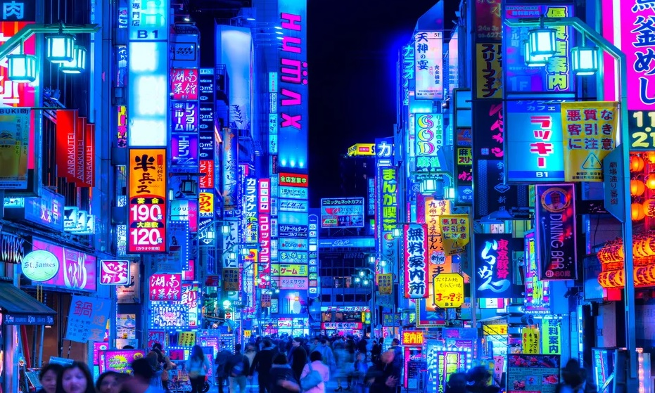
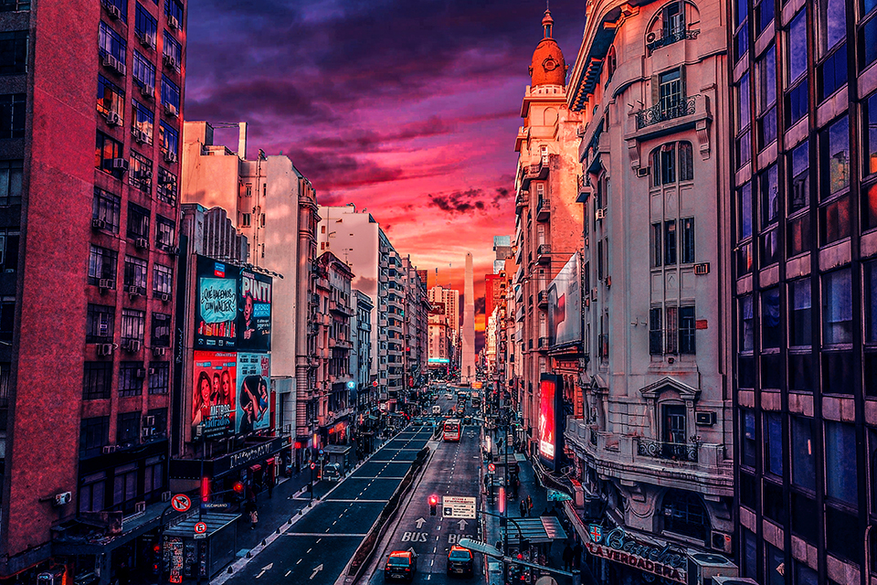
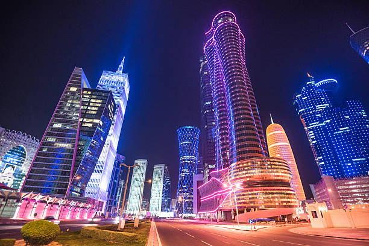

ARGENTINA
Un paseo por el centro de Buenos Aires. Recorrido por Caminito y el Barrio de La Boca,Ir al Mercado de San Telmo Recoleta y su Cementerio, El Ateneo Grand Splendid, Paseo de la Historieta, Recorrer Palermo, Montar en el Tranvía Histórico.
